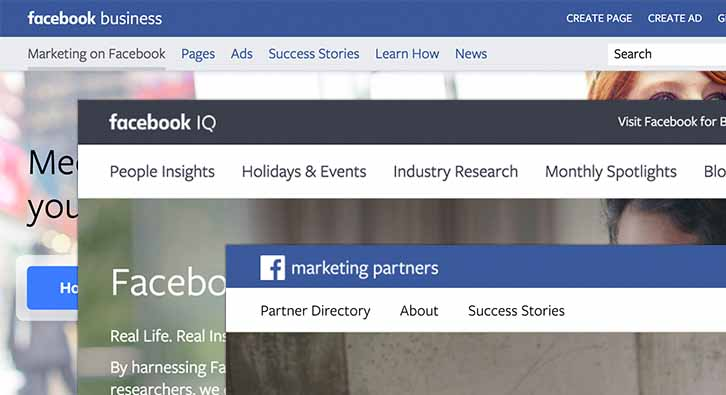
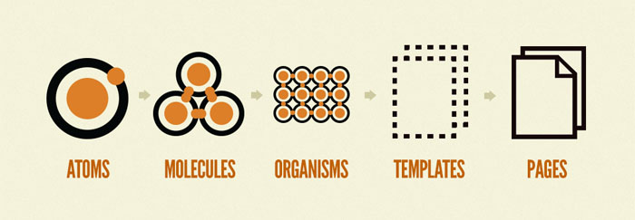
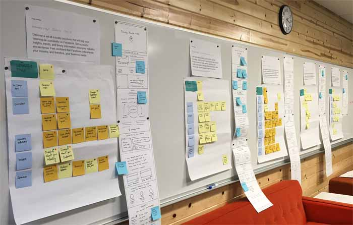

Facebook for Business
Facebook for Business approached Sequence to redesign their collection of sites. As the responsible party for news, tips and best practices for using Facebook's paid consumer services, this web experience is a crucial part of Facebook's offerings. Working with Facebook's senior executives and a team from Sequence, I worked on both the visual and interaction design of the preliminary stages of this project.
Scope
Defining a scope for this project required an in-depth understanding of the Facebook for Business organization. The relationship, hierarchy and services of each team were important in determining their respective importance within the site as well as the overall site objective.
Transparent communication to and between all involved stakeholders became a key part of this project. This meant ensuring that all parties were involved and consented to each phase of the redesign project.

Vision Piece
In order to promote the project amongst all stakeholders, Sequence created a Vision Piece of the most important pages of the Facebook for Business site. This piece showcased the potential benefits of a well-created design system, while increasing the value of this project to ivolved stakeholders.
Unfortunately, this beatiful visual piece cannot be displayed on my site. For more details about the final product please get in touch
Information Architecture
A large part of the redesign was developing a central site where all Facebook for Business' sites could be accessed. This phase involved organizing and ombining the large network of microsites and wikis that make up Facebook for Business into a single navigation. This step resolved a series multiple iterations, and resulted in a very simplified version of the site architecture.
This part of the project was particularly tricky. Explaining the value and justification for merging the smaller microsites to involved stakeholders was a challenging but rewarding part of the redesign.
Design System
Facebook for Business required a design system that would be easy to use, update and implement. They also wished to be able to apply the design seamlessly across future products/services. This led to Sequence proposing the creation of a modified atomic design system. This system would be a comprehensive list of features and layouts that could be applied across the entire brand. The system had two major benefits. Firstly, this simplified the redesign by reducing the number of pages that needed to be manually created. And secondly, it also allows more freedom for each individual team to control the content within their site.

Atomic design system - Brad Frost
Wireframe
This phase of the project gave a whole new meaning to iterative wireframing. I created dozens of iterations of the main pages of the site as well as pages where we would see the most unique elements. Based on these pages, I helped develop a library of the elements (atoms) and modules (molecules), and began creating a draft guideline for page structure and hierarchy. This involved working directily with senior executives of Facebook for Business to identify the objective of each major section of the site as well as ensure that all important elements were included.
Because of the collaborative nature of this work, it was necessary to present all updated mocks to the Facebook for Business team. Since I was continuously iterating over these hand drawn wireframes, instead of redrawing each page after a worksession, I broke the pages down into movable parts and used Photoshop to draw out full scale wireframes that could be printed, transported and presented very easily.

Client Worksession
Time out
Unfortunately, this project was too large to complete in my internship, and I had to hand-off my work part way through. While I cannot share much more on this ongoing work, I can say that this was one of the largest projects I've had the opportunity to take part in. Not only was it amazing to design for such a large audience, but due to Facebook's reach, design problems such as globalizaiton and accessibility made designing this solution an interesting challenge.